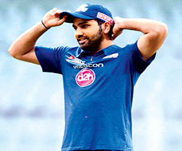
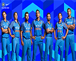
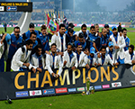
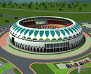
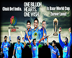

 Rohit Gurunath Sharma is an Indian cricketer. He is a right-handed batsman and an occasional right-arm off break bowler who plays for Mumbai in domestic cricket. He is the captain of Mumbai Indians in the Indian Premier League. In November 2017, when Virat Kohli was rested for the limited overs series against Sri Lanka, Rohit was named the skipper of the Indian team.
| Matches | Innings | Runs | Average |
|---|---|---|---|
| T20 | 68 | 1485 | 30.30 |
| ODI | 172 | 6209 | 44.03 |
| Tests | 23 | 1401 | 42.45 |
The Indian cricket team made its Test cricket debut in 1932 and has since advanced to be among the top four test teams in the ICC rankings in each of 2005 to 2008. The team won the ODI Cricket World Cup in 1983 and 2011.
The highest ever partnership for India was the 413 run first-wicket partnership between Vinoo Mankad & Pankaj Roy v New Zealand at Chennai on 6 January 1956.
The following are the famous stadiums in india, dharamshala stadium, eden gardens in kolkata, wankhede stadium in mumbai, PCA stadium in punjab,bombay stadium in mumbai and many more.
Superb team, all good players, n today we got another good player for middle order against spinners, Hardik.Overall there are all good reviews about indian cricket.
{kind=link}
{kind=link}
{kind=link}
{kind=link}